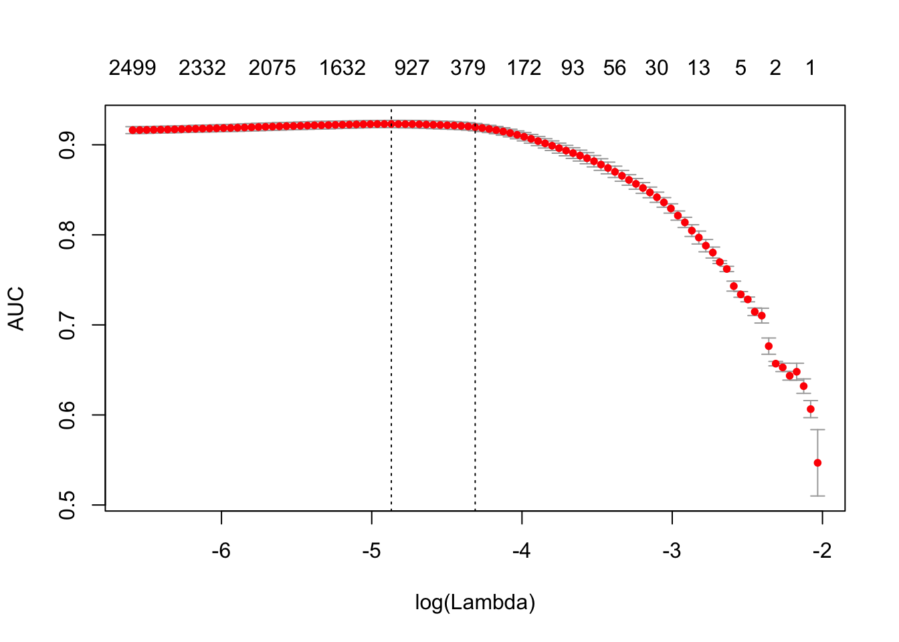
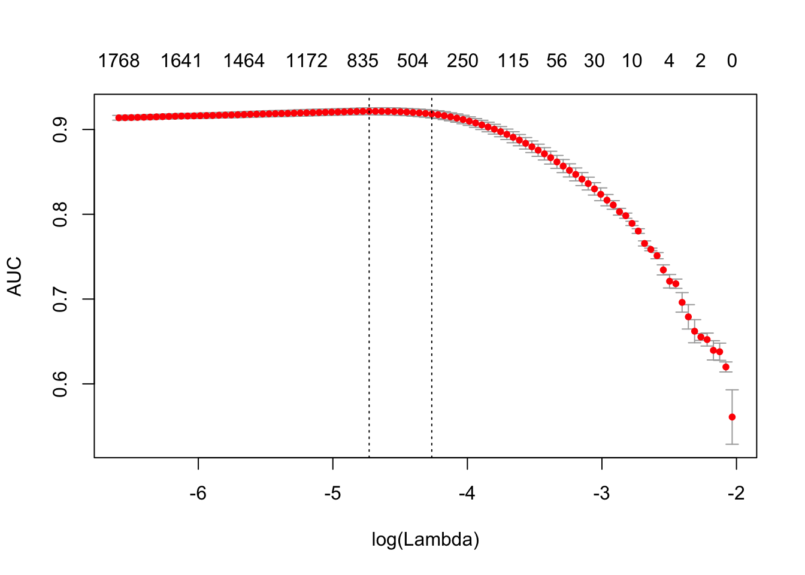
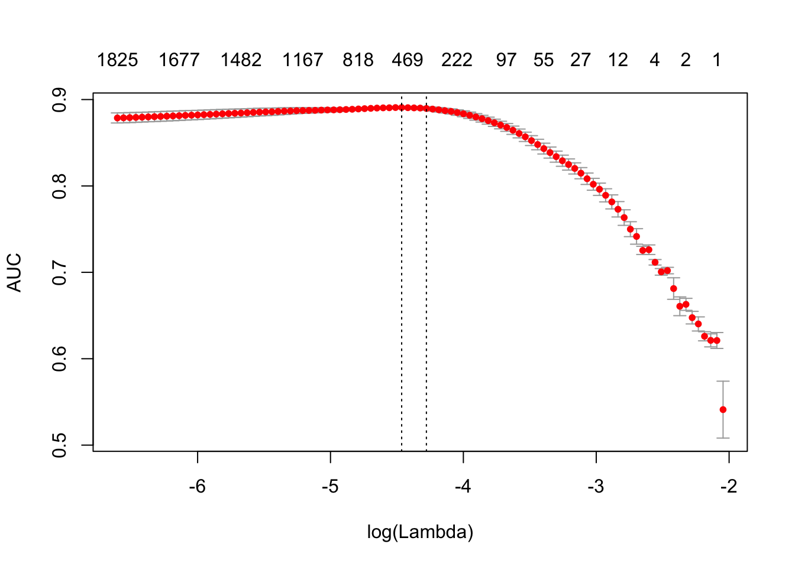
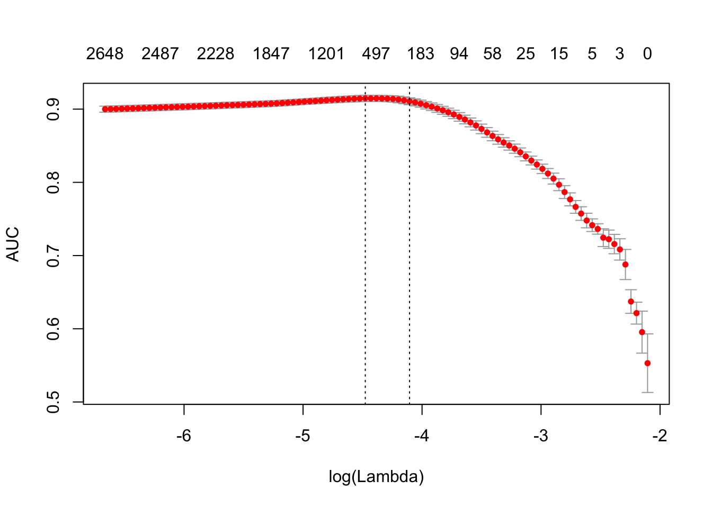

Most text mining and NLP modeling use bag of words or bag of n-grams methods. Despite their simplicity, these models usually demonstrate good performance on text categorization and classification tasks. But in contrast to their theoretical simplicity and practical efficiency building bag-of-words models involves technical challenges. This is especially the case in R because of its copy-on-modify semantics.
Let’s briefly review some of the steps in a typical text analysis pipeline:
In this vignette we will primarily discuss the first step. Texts themselves can take up a lot of memory, but vectorized texts usually do not, because they are stored as sparse matrices. Because of R’s copy-on-modify semantics, it is not easy to iteratively grow a DTM. Thus constructing a DTM, even for a small collections of documents, can be a serious bottleneck for analysts and researchers. It involves reading the whole collection of text documents into RAM and processing it as single vector, which can easily increase memory use by a factor of 2 to 4. The text2vec package solves this problem by providing a better way of constructing a document-term matrix.
Let’s demonstrate package core functionality by applying it to a real case problem - sentiment analysis.
text2vec package provides the movie_review dataset. It consists of 5000 movie reviews, each of which is marked as positive or negative. We will also use the data.table package for data wrangling.
First of all let’s split out dataset into two parts - train and test. We will show how to perform data manipulations on train set and then apply exactly the same manipulations on the test set:
library(text2vec)
library(data.table)
data("movie_review")
setDT(movie_review)
setkey(movie_review, id)
set.seed(2016L)
all_ids = movie_review$id
train_ids = sample(all_ids, 4000)
test_ids = setdiff(all_ids, train_ids)
train = movie_review[J(train_ids)]
test = movie_review[J(test_ids)]To represent documents in vector space, we first have to create mappings from terms to term IDS. We call them terms instead of words because they can be arbitrary n-grams not just single words. We represent a set of documents as a sparse matrix, where each row corresponds to a document and each column corresponds to a term. This can be done in 2 ways: using the vocabulary itself or by feature hashing.
Let’s first create a vocabulary-based DTM. Here we collect unique terms from all documents and mark each of them with a unique ID using the create_vocabulary() function. We use an iterator to create the vocabulary.
# define preprocessing function and tokenization fucntion
prep_fun = tolower
tok_fun = word_tokenizer
it_train = itoken(train$review,
preprocessor = prep_fun,
tokenizer = tok_fun,
ids = train$id,
progressbar = FALSE)
vocab = create_vocabulary(it_train)What was done here?
itoken() function. All functions prefixed with create_ work with these iterators. R users might find this idiom unusual, but the iterator abstraction allows us to hide most of details about input and to process data in memory-friendly chunks.create_vocabulary() function.Alternatively, we could create list of tokens and reuse it in further steps. Each element of the list should represent a document, and each element should be a character vector of tokens.
train_tokens = train$review %>%
prep_fun %>%
tok_fun
it_train = itoken(train_tokens,
ids = train$id,
# turn off progressbar because it won't look nice in rmd
progressbar = FALSE)
vocab = create_vocabulary(it_train)
vocab## Number of docs: 4000
## 0 stopwords: ...
## ngram_min = 1; ngram_max = 1
## Vocabulary:
## terms terms_counts doc_counts
## 1: overturned 1 1
## 2: disintegration 1 1
## 3: vachon 1 1
## 4: interfered 1 1
## 5: michonoku 1 1
## ---
## 35592: penises 2 2
## 35593: arabian 1 1
## 35594: personal 102 94
## 35595: end 921 743
## 35596: address 10 10Note that text2vec provides a few tokenizer functions (see ?tokenizers). These are just simple wrappers for the base::gsub() function and are not very fast or flexible. If you need something smarter or faster you can use the tokenizers package which will cover most use cases, or write your own tokenizer using the stringi package.
Now that we have a vocabulary, we can construct a document-term matrix.
vectorizer = vocab_vectorizer(vocab)
t1 = Sys.time()
dtm_train = create_dtm(it_train, vectorizer)
print(difftime(Sys.time(), t1, units = 'sec'))## Time difference of 0.593056 secsNow we have a DTM and can check its dimensions.
dim(dtm_train)## [1] 4000 35596identical(rownames(dtm_train), train$id)## [1] TRUEAs you can see, the DTM has rows, equal to the number of documents, and columns, equal to the number of unique terms.
Now we are ready to fit our first model. Here we will use the glmnet package to fit a logistic regression model with an L1 penalty and 4 fold cross-validation.
library(glmnet)
NFOLDS = 4
t1 = Sys.time()
glmnet_classifier = cv.glmnet(x = dtm_train, y = train[['sentiment']],
family = 'binomial',
# L1 penalty
alpha = 1,
# interested in the area under ROC curve
type.measure = "auc",
# 5-fold cross-validation
nfolds = NFOLDS,
# high value is less accurate, but has faster training
thresh = 1e-3,
# again lower number of iterations for faster training
maxit = 1e3)
print(difftime(Sys.time(), t1, units = 'sec'))## Time difference of 3.569187 secsplot(glmnet_classifier)
print(paste("max AUC =", round(max(glmnet_classifier$cvm), 4)))## [1] "max AUC = 0.923"We have successfully fit a model to our DTM. Now we can check the model’s performance on test data. Note that we use exactly the same functions from prepossessing and tokenization. Also we reuse/use the same vectorizer - function which maps terms to indices.
# Note that most text2vec functions are pipe friendly!
it_test = test$review %>%
prep_fun %>%
tok_fun %>%
itoken(ids = test$id,
# turn off progressbar because it won't look nice in rmd
progressbar = FALSE)
dtm_test = create_dtm(it_test, vectorizer)
preds = predict(glmnet_classifier, dtm_test, type = 'response')[,1]
glmnet:::auc(test$sentiment, preds)## [1] 0.916697As we can see, performance on the test data is roughly the same as we expect from cross-validation.
We can note, however, that the training time for our model was quite high. We can reduce it and also significantly improve accuracy by pruning the vocabulary.
For example, we can find words “a”, “the”, “in”, “I”, “you”, “on”, etc in almost all documents, but they do not provide much useful information. Usually such words are called stop words. On the other hand, the corpus also contains very uncommon terms, which are contained in only a few documents. These terms are also useless, because we don’t have sufficient statistics for them. Here we will remove pre-defined stopwords, very common and very unusual terms.
stop_words = c("i", "me", "my", "myself", "we", "our", "ours", "ourselves", "you", "your", "yours")
t1 = Sys.time()
vocab = create_vocabulary(it_train, stopwords = stop_words)
print(difftime(Sys.time(), t1, units = 'sec'))## Time difference of 0.4054861 secspruned_vocab = prune_vocabulary(vocab,
term_count_min = 10,
doc_proportion_max = 0.5,
doc_proportion_min = 0.001)
vectorizer = vocab_vectorizer(pruned_vocab)
# create dtm_train with new pruned vocabulary vectorizer
t1 = Sys.time()
dtm_train = create_dtm(it_train, vectorizer)
print(difftime(Sys.time(), t1, units = 'sec'))## Time difference of 0.5097289 secsdim(dtm_train)## [1] 4000 6585Note that the new DTM has many fewer columns than the original DTM. This usually leads to both accuracy improvement (because we removed “noise”) and reduction of the training time.
Also we need to create DTM for test data with the same vectorizer:
dtm_test = create_dtm(it_test, vectorizer)
dim(dtm_test)## [1] 1000 6585Can we improve the model? Definitely - we can use n-grams instead of words. Here we will use up to 2-grams:
t1 = Sys.time()
vocab = create_vocabulary(it_train, ngram = c(1L, 2L))
print(difftime(Sys.time(), t1, units = 'sec'))## Time difference of 1.600132 secsvocab = vocab %>% prune_vocabulary(term_count_min = 10,
doc_proportion_max = 0.5)
bigram_vectorizer = vocab_vectorizer(vocab)
dtm_train = create_dtm(it_train, bigram_vectorizer)
t1 = Sys.time()
glmnet_classifier = cv.glmnet(x = dtm_train, y = train[['sentiment']],
family = 'binomial',
alpha = 1,
type.measure = "auc",
nfolds = NFOLDS,
thresh = 1e-3,
maxit = 1e3)
print(difftime(Sys.time(), t1, units = 'sec'))## Time difference of 2.909883 secsplot(glmnet_classifier)
print(paste("max AUC =", round(max(glmnet_classifier$cvm), 4)))## [1] "max AUC = 0.9217"Seems that usage of n-grams improved our model a little bit more. Let’s check performance on test dataset:
# apply vectorizer
dtm_test = create_dtm(it_test, bigram_vectorizer)
preds = predict(glmnet_classifier, dtm_test, type = 'response')[,1]
glmnet:::auc(test$sentiment, preds)## [1] 0.9268974Further tuning is left up to the reader.
If you are not familiar with feature hashing (the so-called “hashing trick”) I recommend you start with the Wikipedia article, then read the original paper by a Yahoo! research team. This technique is very fast because we don’t have to perform a lookup over an associative array. Another benefit is that it leads to a very low memory footprint, since we can map an arbitrary number of features into much more compact space. This method was popularized by Yahoo! and is widely used in Vowpal Wabbit.
Here is how to use feature hashing in text2vec.
h_vectorizer = hash_vectorizer(hash_size = 2 ^ 14, ngram = c(1L, 2L))
t1 = Sys.time()
dtm_train = create_dtm(it_train, h_vectorizer)
print(difftime(Sys.time(), t1, units = 'sec'))## Time difference of 1.172304 secst1 = Sys.time()
glmnet_classifier = cv.glmnet(x = dtm_train, y = train[['sentiment']],
family = 'binomial',
alpha = 1,
type.measure = "auc",
nfolds = 5,
thresh = 1e-3,
maxit = 1e3)
print(difftime(Sys.time(), t1, units = 'sec'))## Time difference of 4.589972 secsplot(glmnet_classifier)
print(paste("max AUC =", round(max(glmnet_classifier$cvm), 4)))## [1] "max AUC = 0.8937"dtm_test = create_dtm(it_test, h_vectorizer)
preds = predict(glmnet_classifier, dtm_test , type = 'response')[, 1]
glmnet:::auc(test$sentiment, preds)## [1] 0.9036685As you can see our AUC is a bit worse but DTM construction time is considerably lower. On large collections of documents this can be a significant advantage.
Before doing analysis it usually can be useful to transform DTM. For example lengths of the documents in collection can significantly vary. In this case it can be useful to apply normalization.
By “normalization” we assume transformation of the rows of DTM so we adjust values measured on different scales to a notionally common scale. For the case when length of the documents vary we can apply “L1” normalization. It means we will transform rows in a way that sum of the row values will be equal to 1:
dtm_train_l1_norm = normalize(dtm_train, "l1")By this transformation we should improve the quality of data preparation.
Another popular technique is TF-IDF transformation. We can (and usually should) apply it to our DTM. It will not only normalize DTM, but also increase the weight of terms which are specific to a single document or handful of documents and decrease the weight for terms used in most documents:
vocab = create_vocabulary(it_train)
vectorizer = vocab_vectorizer(vocab)
dtm_train = create_dtm(it_train, vectorizer)
# define tfidf model
tfidf = TfIdf$new()
# fit model to train data and transform train data with fitted model
dtm_train_tfidf = fit_transform(dtm_train, tfidf)
# tfidf modified by fit_transform() call!
# apply pre-trained tf-idf transformation to test data
dtm_test_tfidf = create_dtm(it_test, vectorizer) %>%
transform(tfidf)Note that here we first time touched model object in text2vec. At this moment the user should remember several important things about text2vec models:
fit() or fit_transform() function, model will be modifed by it.transform(new_data, fitted_model) method.More detailed overview of models and models API will be available soon in a separate vignette.
Once we have tf-idf reweighted DTM we can fit our linear classifier again:
t1 = Sys.time()
glmnet_classifier = cv.glmnet(x = dtm_train_tfidf, y = train[['sentiment']],
family = 'binomial',
alpha = 1,
type.measure = "auc",
nfolds = NFOLDS,
thresh = 1e-3,
maxit = 1e3)
print(difftime(Sys.time(), t1, units = 'sec'))## Time difference of 3.194087 secsplot(glmnet_classifier)
print(paste("max AUC =", round(max(glmnet_classifier$cvm), 4)))## [1] "max AUC = 0.9146"Let’s check the model performance on the test dataset:
preds = predict(glmnet_classifier, dtm_test_tfidf, type = 'response')[,1]
glmnet:::auc(test$sentiment, preds)## [1] 0.9053246Usually tf-idf transformation significantly improve performance on most of the dowstream tasks.